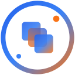
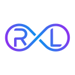
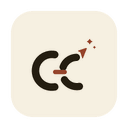

AI agents for developers (2026)
Coding agents, review bots, docs servers and sandboxes that help software developers ship faster. We picked the top tools for 6 jobs developers do every day: 33 tools in all, 31 of them free or with a free tier.
Jump to
- Write and edit code
- Work in the terminal
- Review pull requests
- Give agents current docs
- Test your app
- Run several coding agents at once
Free tools from AgentScout for developers: Agent setup generator (CLAUDE.md, AGENTS.md, Cursor rules) · Token counter
How we picked: each section takes the tools matched to that task in our directory, putting tools whose category and stated use cases fit the task first, then ordering by tracked GitHub stars. No paid placements.
Write and edit code
Coding agents that write, edit and refactor code from plain-language requests, in your terminal, editor or browser. All 1,038 tools →
 opencode Open source
opencode Open source
OpenCode is an MIT-licensed open-source AI coding agent for the terminal, with a beta desktop app, that works with many model providers instead of locking you to one. Install it with a one-line script, npm, Homebrew, pacman, mise or Nix, then let it read your repository, edit files and run commands from a keyboard-driven TUI. · ★ 223,180- Ponytail Open source
Ponytail is an MIT-licensed skill for Claude Code and other coding agents that makes them write like a terse senior engineer: only the code a task needs, without cutting validation, error handling, security or accessibility; its published benchmark on 39 tasks reports roughly half the code, time and tokens while more risky logic ships with tests. · ★ 187,364 - Claude Code Paid
Claude Code is Anthropic's agentic coding tool that lives in your terminal, understands your codebase and carries out routine tasks, explains complex code and handles git workflows through natural-language commands. It also runs in IDEs and on GitHub when you tag @claude, and installs via a native script, Homebrew or WinGet (the npm install is deprecated). · ★ 153,919  CC Switch Open source
CC Switch Open source
CC Switch is a free, MIT-licensed desktop app for Windows, macOS and Linux that manages Claude Code, Claude Desktop, Codex, Gemini CLI, OpenCode, OpenClaw, Hermes Agent, Pi, Kimi Code and other coding agents from one window. You can switch each agent's API provider in one click, keep MCP servers, skills and system prompts in sync across tools, and stop hand-editing JSON, TOML or YAML config files. Built with Tauri, with frequent releases. · ★ 150,320
UI UX Pro Max Open source
UI UX Pro Max is an open-source agent skill that gives coding agents design intelligence for web and mobile UI, with a design-system generator that reasons over your product type and outputs matching styles, colour palettes, font pairings, layout patterns and UX rules for many frameworks. · ★ 147,219- Graphify Open source
Graphify is an Apache-2.0 /graphify skill for Claude Code, Cursor, Codex and Gemini CLI that maps a whole project, including code, docs, SQL schemas, configs and PDFs, into a knowledge graph the agent can query instead of grepping through files. Code is parsed locally with tree-sitter, so the map is deterministic, needs no LLM or vector store, and nothing leaves your machine, and every edge in the graph says why it exists. A separate paid Graphify Cloud adds always-on team memory with a 14-day trial. · ★ 139,123
Work in the terminal
Agents that live in your terminal: give them a task and they read files, run commands and propose changes. All 336 tools →
- Hermes Agent (Nous Research) Open source
Hermes Agent is Nous Research's MIT-licensed, self-improving agent with a built-in learning loop: it writes skills from completed tasks, refines them in use, keeps agent-curated memory and searches its own past conversations. It runs on anything from a $5 VPS to serverless infrastructure, offers a full terminal UI, and one gateway serves Telegram, Discord, Slack, WhatsApp, Signal and the CLI, with any model via Nous Portal, OpenRouter, OpenAI or your own endpoint. · ★ 258,708  REA Open source
REA Open source
MCP server and CLI that lets coding agents reverse engineer native binaries, Electron and JavaScript apps, .NET assemblies and live websites, using Ghidra, Hopper or IDA under the hood. · ★ 410,375- opencode Open source
OpenCode is an MIT-licensed open-source AI coding agent for the terminal, with a beta desktop app, that works with many model providers instead of locking you to one. Install it with a one-line script, npm, Homebrew, pacman, mise or Nix, then let it read your repository, edit files and run commands from a keyboard-driven TUI. · ★ 223,180  MarkItDown Open source
MarkItDown Open source
MarkItDown is Microsoft's MIT-licensed Python tool that converts PDFs, Word, PowerPoint and Excel files, images, audio, HTML, CSV, JSON, ZIP archives and more into clean Markdown that LLMs and agents can read, keeping headings, lists, tables and links. You can call it from the command line or Python, add optional plugins such as Azure Document Intelligence for harder documents, and expose it to Claude Desktop and other agents through the companion markitdown-mcp server. · ★ 192,990 Ollama Open source
Ollama Open source
Ollama is an MIT-licensed tool for running open models such as Kimi, GLM, MiniMax, DeepSeek, gpt-oss, Qwen and Gemma locally or in Ollama's cloud, with apps for macOS, Windows and Linux plus an official Docker image. It can launch or connect those models to coding agents including Claude Code, Codex, Copilot CLI, DeepSeek Harness, Droid and OpenCode (`ollama launch claude`), and official Python and JavaScript libraries are available; v0.40.16 shipped Nov 9, 2026. · ★ 185,335- Claude Code Paid
Claude Code is Anthropic's agentic coding tool that lives in your terminal, understands your codebase and carries out routine tasks, explains complex code and handles git workflows through natural-language commands. It also runs in IDEs and on GitHub when you tag @claude, and installs via a native script, Homebrew or WinGet (the npm install is deprecated). · ★ 153,919
Review pull requests
Agents that read diffs, leave review comments and catch bugs before a pull request is merged. All 46 tools →
 CLI-Anything Open source
CLI-Anything Open source
CLI-Anything, from the HKU Data Science lab (HKUDS), is an Apache-2.0 project that turns existing desktop software, codebases and web APIs into agent-native command-line tools, so coding agents like Claude Code can drive programs such as Blender, GIMP, LibreOffice or CAD apps through structured commands with previews instead of screenshots. Its CLI-Hub (pip install cli-anything-hub) lets agents browse and install community-built CLIs, and contributors can add new harnesses by pull request. · ★ 57,786- Open Code Review Open source
Open Code Review is Alibaba's Apache-2.0 AI code review CLI (ocr), used internally by tens of thousands of Alibaba developers before it was open-sourced. It reads Git diffs and sends changed files to an agent that can read whole files, search the codebase and inspect related changes, then posts structured line-level comments; deterministic pipelines and a built-in multi-language ruleset catch issues like null-pointer risks, thread safety, XSS and SQL injection, and ocr scan reviews whole files or folders without a diff. It works with any OpenAI- or Anthropic-compatible model endpoint. · ★ 49,071  GitHub MCP Server Open source
GitHub MCP Server Open source
GitHub's official MCP server for letting agents work with repositories, issues, pull requests and Actions. · ★ 34,082- Paradev Open source
Paradev (formerly Superset) is an MIT-licensed desktop app for running CLI coding agents in parallel. Each task gets its own Git worktree, branch and terminals, so Claude Code, Codex, OpenCode, Gemini CLI, Cursor Agent or any other CLI agent can work on several tasks in one repository at once, with code review and browser previews in the same workspace. You use your own agent subscriptions; a macOS download is on the releases page. · ★ 16,381 - Qodo Freemium
AI code review and testing agents that work in the IDE, the terminal and pull requests to catch issues before merge. · ★ 13,706 - Open SWE Open source
LangChain's asynchronous coding agent that takes work from GitHub issues, Slack or Linear, implements it in an isolated sandbox and opens a pull request. · ★ 11,146
Give agents current docs
MCP servers that give coding agents current, version-specific documentation, so they stop guessing at outdated APIs. All 27 tools →
 Context7 Freemium
Context7 Freemium
MCP server and platform that feeds coding agents up-to-date, version-specific library documentation. · ★ 63,949- Docmost Open source + cloud
Docmost is an open-source collaborative wiki and documentation software. It is an open-source alternative to Confluence and Notion · ★ 22,159 - Skill Seekers Open source
Skill Seekers is an MIT-licensed Python CLI (pip install skill-seekers) that turns documentation sites, GitHub repos, PDFs, videos, notebooks, wikis and other sources, 18 source types in all, into structured knowledge packs. You create a skill from a URL, then package it for one of 22 targets: Claude, Gemini or OpenAI skills, RAG pipelines such as LangChain, LlamaIndex or Pinecone, or coding assistants like Cursor, Windsurf and Cline. It also ships an MCP server. · ★ 15,338  GitMCP Open source
GitMCP Open source
Free remote MCP server that gives agents up-to-date docs and code for any GitHub project. · ★ 8,500
RLinf Open source
RLinf is an Apache-2.0 reinforcement-learning infrastructure for embodied and agentic AI that scales PPO and GRPO training across GPUs for vision-language-action robot policies and LLM agents, with recent support for OpenPI pi0.5 fine-tuning, GenieSim, SO-101 arms and humanoid simulators; documentation is on Read the Docs. · ★ 5,632 Laravel Boost Open source
Laravel Boost Open source
Laravel Boost is an MIT package that gives a coding agent Laravel-specific context so the code it writes matches a Laravel app. The README points documentation at the Laravel site. That docs page returned HTTP 200 on 27 Nov 2026 at https://laravel.com/framework/docs/13.x/boost. Release v2.10.4 was published 29 Oct 2026 and adds a command to re-index rules. GitHub laravel/boost showed 3,697 stars and 393 forks on 27 Nov 2026. · ★ 3,697
Test your app
Agents that write and run tests, click through your app and report what breaks. All 58 tools →
- Keploy Open source
Keploy records API traffic and turns it into isolated integration and end-to-end tests · ★ 18,913 - Midscene.js Open source
Vision-driven UI automation and E2E testing framework where a GUI agent carries out natural-language steps on web, mobile and desktop apps. · ★ 15,441 - Qodo Freemium
AI code review and testing agents that work in the IDE, the terminal and pull requests to catch issues before merge. · ★ 13,706  Shippie Open source
Shippie Open source
Extendable code review and QA agent that reads your diff, explores the codebase and posts focused review comments. · ★ 2,514 QA Agent Open source
QA Agent Open source
QA Agent is an open-source Playwright library for AI browser regression testing. An agent writes, runs, or maintains tests and reports what broke. · ★ 1,295- Hercules Open source
Open-source testing agent that turns plain Gherkin steps into end-to-end UI, API, accessibility and security tests. · ★ 1,205
Run several coding agents at once
Command centers, IDEs and CLIs for running several coding agents at once, each on its own task or Git worktree, then reviewing what they hand back. All 21 tools →
 Herdr Open source
Herdr Open source
Runtime for running and managing many coding agents side by side. · ★ 46,792- Paseo Open source
Orchestrate multiple coding agents from desktop and mobile. · ★ 22,507 - Superset Source-available + cloud
Agentic IDE for orchestrating many coding agents in parallel. · ★ 15,746 
Cc Haha Open source + cloud
Claude Code / AI Agent ： Agent 、Git Worktree、 Diff、 、 、Computer Use、 ； 、 、 H5 。 Local-first Claude Code / AI Agent desktop workspace: multi-agent teams, Git worktrees, diffs, skills marketplace. · ★ 15,236- Worktrunk Open source
CLI for managing Git worktrees so several AI agents can work in parallel. · ★ 9,561 - CCPM Open source
CCPM is an MIT-licensed project-management agent skill from Automaze for spec-driven development: it turns an idea into a PRD, the PRD into an epic, the epic into GitHub Issues, and the issues into code, with traceability at each step. Work runs in parallel across Git worktrees with several agents at once. It installs as an Agent Skill in any compatible harness, including Claude Code, Codex, OpenCode, Factory, Amp and Cursor. · ★ 8,454
Popular searches for developers
- Free AI coding agents with a free plan
- AI coding agents for the terminal (CLI)
- Sandboxes for AI agents to run code
- Free MCP servers
Other roles
- AI engineers
- Marketers
- Sales teams
- Customer support teams
- Designers
- Artists
- Photographers
- Filmmakers
- Video editors
- Musicians and producers
- Researchers
- Data analysts
- Crypto traders
- Founders and small businesses
- DevOps and SRE engineers
- Security engineers
- Game developers
- Content creators
- QA engineers
- Data engineers
- Product managers
- Students
- Operations teams
- Startup CTOs
- Agencies
- Open-source maintainers
- MCP developers
- Automation engineers
- E-commerce teams
- All roles
Best-of lists for developers
Related categories
Facts come from our directory listings; pricing is as each maker states it and can change. Missing a tool? Submit it free.